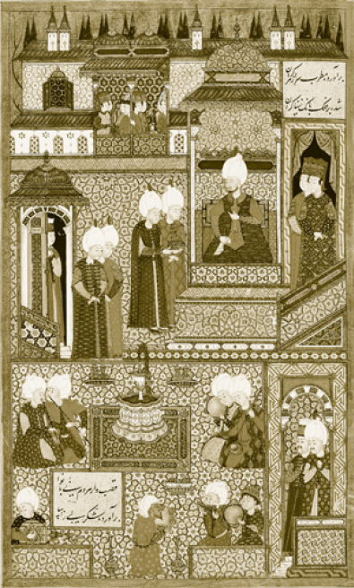
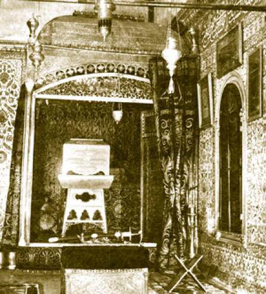
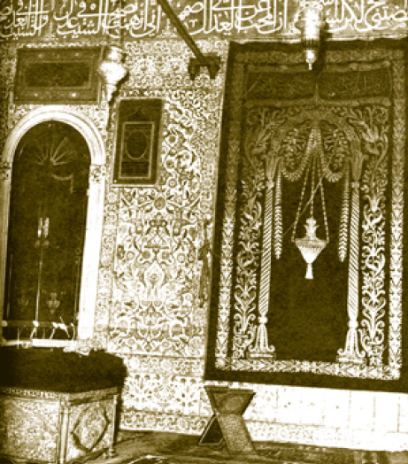

HAS ODA (HIRKA-İ SAADET DAİRESİ -
MUKADDES EMANETLER DAİRESİ)
Has Oda, Enderun avlusunda padişahların kendilerine mahsus dairesidir. Fatih Köşkü ve Çinili Köşk gibi Has Oda da bir saray köşkü olarak inşa edilmiştir. İlk olarak Fatih devrinde yapılan Has Oda, Sultan III. Ahmed devrinde ciddi tamiratlar görmüş ve bu düzenlemeler günümüze kadar gelmiştir. Has Oda, Fatih Sultan Mehmed ve II. Bayezid devirlerinde çalışma odası olarak kullanılmışsa da Yavuz Sultan Selim Han zamanında Mukaddes Emanetler’in buraya getirilmesiyle bambaşka bir görev üstlenmiştir. Adı da Hırka-i Saadet Dairesi olarak anılmaya başlanmıştır. Giriş kapısının üzerinde hattat olan Sultan III. Ahmed’in yazdığı Kelime-i Tevhid bulunmaktadır. İki katlı olan binanın her katında üçer oda bir sofa bulunur.
Şadırvanlı Sofa
Girişte ilk kısım Şadırvanlı Sofa’dır. Adını birinci kubbe altında bulunan şadırvandan alan bu sofada diğer kubbe altında da padişahın oturması için bir seki bulunur. Arzhâne ve koğuşlara açılan ahşap kapılar ve pencere kapakları binanın ilk yapıldığı dönemden kalmadır ve üzerlerinde Fatih’in adı bulunur. Has Oda’nın sedefli kapısı ise 1916’da yapılan yenilenme sırasında takılmıştır.
Arzhâne
Şadırvanlı Sofa’nın sağında bulunan “Üdhulûha bi selamin aminîn/Oraya emniyetle ve selametle girin.” (Hicr Sûresi, 46) yazılı kapıdan girilir. Padişah burada kendine gelen arz kâğıtlarını (telhisleri) okur ve gerekli emirleri verirdi. Kendisiyle görüşmeye gelenleri de kabul ettikleri bir odadır. Adını da bu faaliyetten alır. Oda hakkında galat-ı meşhur buraya Arslanhâne denilmesidir. Valide sultanların padişah olan oğullarına “arslanım” diye hitap etmelerinden dolayı odaya bu adın verildiği rivayet edilmekle beraber, hitapla odanın bir alâkası yoktur. Tekfur Sarayı üretimi olan İznik ve Kütahya çinileriyle döşelidir. Her dönemin her çeşit çinisini barındırmasından dolayı güzel bir çini sergisi gibidir. Çini yazı kuşağında Ahzab Sûresi’nin 38–44. ayetleri yazılıdır. Sûre’nin 44. ayetten sonraki kısımları ise Has Oda’nın kubbesinin tam ortasında yer alır. Oda, cülûs merasimlerinde ve ramazan ayının on beşinci günü yapılan Hırka-i Saadet Ziyaretleri’nde sadrazam ve saray ileri gelenlerinin padişahla tebrikleşmeye geldikleri bir yer olarak da bilinir. Günümüzde Arzhâne ziyarete açıktır ve Mukaddes Emanetler’in bir kısmı bu odada sergilenmektedir.

Şadırvanlı Sofa ve Taht Odası
Has Oda (Taht Odası)
Has Oda bu yapının en mühim odasıdır. Sağdaki ikinci odadır. Kapısının üst tarafında celî-sülüs ile “Esselamu aleyke ya Resulullah” yazılıdır. Giriş kapısı Sedefkâr Vasıf Usta’nın eseridir. Kapının üzerinde Hz. Mevlana’nın şu mısraları yer alır:
“Senin kapından başka bütün kapılar kapanmıştır
Ta ki garipler başkasına yol bulmasın diye.
Ey kerem ve izzet kapısı, ey nur saçan kapı
Güneş, ay ve yıldızlar sana kul, köledir.”
Has Oda, genelde padişahların kışın kullandıkları bir çalışma odasıdır. Özellikle Fatih Sultan Mehmed Han, Sultan II. Bayezid Han, Yavuz Sultan Selim Han ve Kanuni Sultan Süleyman Han günlük yaşantılarının önemli bir kısmını burada geçirirlerdi. Devlet işlerinin çokluğundan dolayı bazı zamanlar burada gecelerlerdi.
Has Oda’nın zamanla yıpranan kubbesi Yavuz Sultan Selim tarafından Mısır Seferi’nden sonra Memluk mukarnaslarıyla yükseltilmiştir. Bu hâliyle Has Oda’nın kubbesi diğer kubbelerden çok daha yüksektir ki bu aynı zamanda hükümdarın kullandığı bir oda olduğunun da işaretidir.
Has Oda’nın sol köşesinde IV. Murad tarafından yaptırılan gümüş üzerine altın yaldızlı sayebanlı taht bulunur. Sarayın kuyumcubaşısı Derviş Zıllî Mehmed tarafından yapılmıştır ki kendisi Evliya Çelebi’nin babasıdır. Zıllî Efendi’nin Kâbe üzerindeki Altın Oluk’u da yaptığı bilinir.
Tahtın tavanı dört sütun üzerine oturtulmuş aynalı tonoz şeklinde olup burada enfes motifler işlenmiş ve hadisler yazılmıştır. Üzerinde Şair Cevri’nin bu tahttan bahseden bir kasidesi yazılıdır. Yeni padişah olacak şehzadeler Bâbü’s saade önündeki cülûs merasiminden evvel buradaki tahta otururlardı. Sadrazam ve şeyhülislâm yeni padişaha burada biat ederdi. Resmî törenden önce burada iki rekât namaz kılardı.
II. Mahmud zamanına kadar bütün merasimlerde kullanılan tahtın iki yüzü gümüş kafes işi ile örtülerek Mukaddes Emanetler’in muhafaza edildiği bir şebeke hâline getirilmiştir. Hırka-i Saadet çekmecesi buraya konulmaya başlamıştır.
Oda küçük sayılabilecek bir ebatta olmasına rağmen enfes İznik çini panolarıyla ve muhteşem kubbesiyle âdeta genişletilmiş gibidir. Çini panoların üzerinde Hz. Peygamber’in mukaddes hırkasının burada bulunmasından dolayı “Hırka Kasidesi” olarak da bilinen el-Busirî’nin, Peygamberimizi anlatan Arapça Kaside-i Bürde’si bulunur. Lacivert zemin üzerine beyaz sülüs hatla yazılmıştır. Kaside-i Bürde’nin üzerinde kubbe eteğinde siyah zemin üzerine altın yaldızla Fetih Sûresi’nin ilk ayetleri, kubbenin tam ortasında ise Ahzab Sûresi’nin 45, 46 ve 47. ayetleri yazılıdır. Topkapı Sarayı’nı anlatan bazı kitaplarda geçen ve kitaptan kitaba aktarılan bir bilgide bu kubbede Zafer ve Nur Sûrelerinin yazılı olduğu iddia edilir ki bu ifade hatalıdır.
Kubbe kasnağı hizasından aşağıya doğru Kâbe kuşakları ve gaza sancakları bulunur. Kubbeden sarkan zincirler, paha biçilemeyecek değerdeki mücevher askıları tutmaktadır.
Hırka-i Saadet, Mısır’dan getirildiği günden beri padişah dairesinde korunagelmiştir. Yavuz Sultan Selim’den sonra da Mukaddes Emanetler’in gelişi sürmüştür. Saray, 19. yüzyılda terk edildikten sonra oda tamamen mukaddes eşyanın korunduğu bir daire hâlini almıştır ki binanın tümü zamanla Mukaddes Emanetler Dairesi olarak anılmıştır.
Has Oda günümüzde ziyarete kapalı olup Arz Odası’ndan bakılınca Has Oda’da köşedeki şimdi şebeke görünümünde olan saltanat tahtı ve içinde Hırka-i Saadet Çekmecesi görülmektedir.
Has Oda’nın arka taşlığından Mabeyn-i Hümâyûn’a açılan kapı üzerinde üç satırlı çini levhada birinci satırda Besmele, ikinci satırda Kelime-i Tevhid, üçüncü satırda ise Hulafâ-ı Râşidîn’in isimleri (Hz.) Ebubekir, Ömer, Osman, Ali yazılıdır. Altındaki çini kitabede ise Has Oda’da “Cenab-ı Fahrü’l Enbiya Efendimizin Hırka-i Şerif’ine mahsus astarın Sultan Mehmed Reşad Han tarafından aslına sadık kalınarak tamir ettirildiğinden” bahsedilmektedir.

Dairenin ziyarete açıldığı 1960’lı yıllarda Taht Odası. Arkada tahttan bozma gümüş şebeke içinde Hırka-i Saadet muhafazası, ön tarafta ise Peygamberimiz’in kılıcı görülmektedir.

Taht Odası’nda (sağdan sola) işlemeli perde, Kazasker Mustafa İzzet Efendi’nin
hattıyla bir Hilye-i Şerif, Peygamberimizin kılıcı, dolap üzerinde de
Sultan III. Ahmed tarafından yazılmış Kelime-i Şehadet levhası görülmektedir